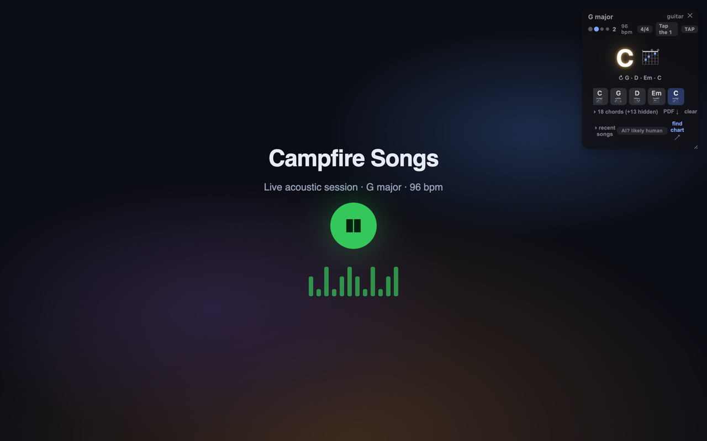
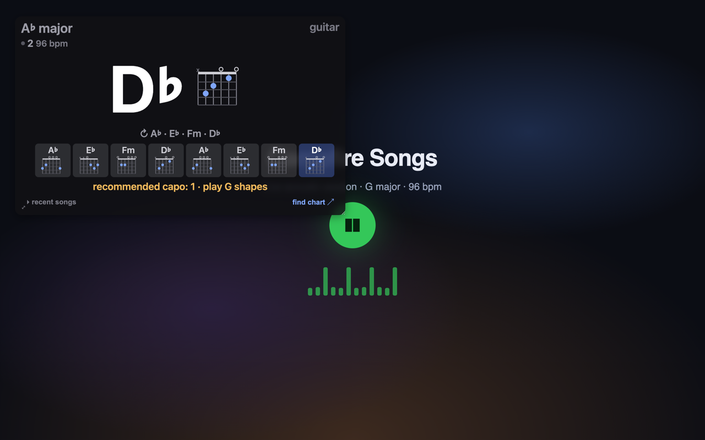
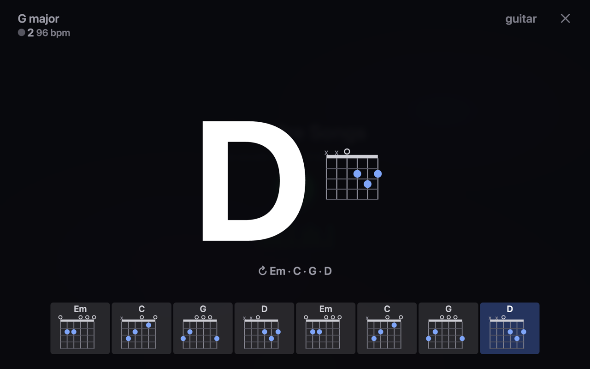
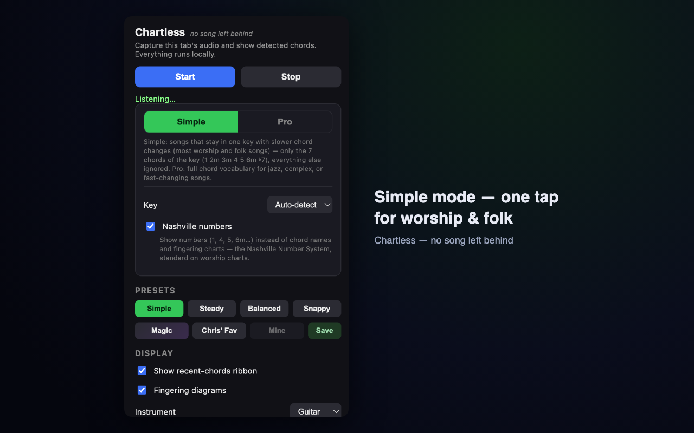

Chartless listens to whatever is playing in your browser tab and shows you the chords — live, in key, on the beat. YouTube, streaming, anything with sound. Pick up your instrument and play along. Because every song deserves a little chart.
A song charter in your pocket. Everything happens in real time, while the song plays.
A clean overlay shows the current chord, the detected key, and a ribbon of recent chords. A sequence decoder smooths the stream so the display holds steady instead of flickering.
One tap locks detection to the seven chords of the key (1 2m 3m 4 5 6m ♭7). Everything else is ignored — perfect for songs that stay in one key with steady changes.
Flip to the Nashville Number System and see 1 · 4 · 5 instead of letter names — the same shorthand session players and worship teams chart with.
Chartless finds the tempo, shows the BPM, pulses on every beat, and counts the measure — and it trusts chord changes that land on the beat, especially the downbeat, the way a musician's ear does.
Chord diagrams for ukulele, guitar, bass, and piano, right in the overlay and the ribbon. Transpose the display up or down to play in a friendlier key.
Song in A♭? Chartless says "capo 1 · play G shapes" and draws the shapes you actually finger. The chart follows your capo, not the other way around.
One tap blows the current chord up to fill the screen — big enough for the whole band, with the beat and key still in view.
Chartless learns each song's key, tempo, and progression loop — and greets you with them the next time it hears the song. Browse recent songs, jump back to any of them, or link out to a full chord chart on Ultimate Guitar, SongSelect, or Google.
Chartless is classic signal processing — the same physics your ear uses, written in code. No AI models, no cloud, no training on your listening, no guessing black box. Fast, predictable, and it works the same on day one thousand as day one.
All audio analysis runs inside your browser. Nothing is recorded, nothing is uploaded, no account needed. Your music stays yours.
Apps like Chordify are song libraries: you go to them, pick a track they've processed, and read a timeline. Chartless is the opposite — it comes to your music, wherever it's already playing.
| Chartless | Song-library chord apps | |
|---|---|---|
| Works on | Anything playing in your tab — livestreams, church services, brand-new releases, obscure recordings | Songs in their library, or tracks you upload and wait on |
| Where it happens | 100% on your machine — zero network requests | Their servers, your account, their AI models |
| How it works | Classic signal processing — transparent math, no AI | Cloud AI black box |
| Made for playing along | Beat pulse & measure count, chords shown before they sound, capo advisor, Nashville numbers, stage view | Scrub-and-practice timelines |
| Price | One small price, yours forever | $40–55+ every year, forever |
Live captures — a real song playing, Chartless listening.




Chartless captures tab audio only while you press Start, analyzes it on your machine with classic signal processing — not AI, and throws it away. No servers, no models, no analytics, no data collection of any kind. Read the full privacy policy.
Tell us the song and what you saw — every report makes the charts better.
chartless@creedysolutions.com